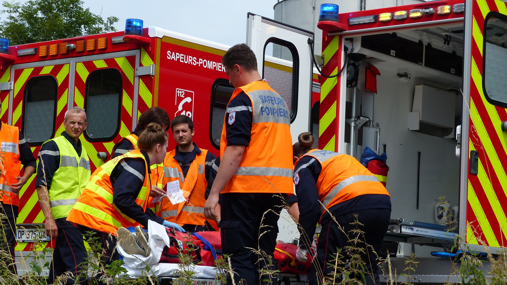

"Derrière chaque intervention se cache une infrastructure complexe, mais surtout des citoyens engagés au service de la collectivité."
En tant qu'informaticien en stage au sein d'un Service Départemental d'Incendie et de Secours (SDIS), mon quotidien consiste à accompagner le bon fonctionnement des infrastructures techniques. Cependant, cette position en "back-office" offre un point de vue privilégié sur le véritable moteur de l'organisation : les femmes et les hommes qui interviennent sur le terrain, et plus particulièrement les volontaires.
👨🚒 Le Volontariat : Le pilier des secours en France
Il est important de rappeler qu'en France, près de 79% des sapeurs-pompiers sont des volontaires (SPV). Ce ne sont pas des professionnels à temps plein, mais des citoyens — étudiants, salariés, artisans ou fonctionnaires — qui choisissent de dédier une partie de leur temps libre à la protection des populations.
Cet engagement citoyen est indispensable au maintien de la chaîne des secours sur l'ensemble du territoire, garantissant une intervention rapide de jour comme de nuit.
🚀 Les raisons de s'engager
Observer ces équipes au quotidien met en évidence plusieurs aspects fondamentaux de leur engagement :
- Le sens du collectif : La cohésion n'est pas qu'un concept abstrait. Sur le terrain, la sécurité de chacun dépend de la rigueur et de la fiabilité du groupe.
- L'acquisition de compétences : Les volontaires reçoivent une formation exigeante. Ils apprennent la gestion du stress, l'analyse rapide de situations critiques et la maîtrise des gestes de premiers secours.
- L'impact sociétal : Chaque garde, chaque astreinte a une utilité publique directe. Il s'agit de protéger les personnes, les biens et l'environnement.

Une mission essentielle reposant majoritairement sur le volontariat.
🤔 Idées reçues vs Réalité
Le métier est souvent entouré de stéréotypes qu'il convient de nuancer :
"Les pompiers ne font qu'éteindre des incendies."
En réalité, la lutte contre les incendies représente une part minoritaire des interventions. La grande majorité des missions concerne le SUAP (Secours d'Urgence Aux Personnes) : malaises, accidents de la route, détresses vitales.
"Il faut être un sportif de haut niveau."
Si une bonne condition physique est exigée pour garantir la sécurité lors des opérations, l'endurance, la capacité d'apprentissage et la stabilité émotionnelle sont tout aussi cruciales.
⚖️ Comment franchir le pas ?
Pour devenir Sapeur-Pompier Volontaire, plusieurs critères sont requis :
Conditions de base
Avoir entre 16 et 60 ans, jouir de ses droits civiques et répondre aux conditions d'aptitude médicale lors de la visite d'incorporation.
Formation
Les nouvelles recrues suivent une Formation Initiale (FIA) adaptée à leurs disponibilités, abordant le secourisme, la lutte contre l'incendie et les opérations diverses.
Organisation
L'engagement s'organise sous forme de gardes ou d'astreintes, très souvent compatibles avec une vie professionnelle grâce aux conventions signées avec les employeurs.
📌 Conclusion
Côtoyer ce milieu en tant que technicien permet de réaliser à quel point la technologie (réseaux de communication, logiciels d'alerte, gestion de bases de données) est au service d'une cause profondément humaine.
Si vous souhaitez donner de votre temps, acquérir de nouvelles compétences et vous investir au niveau local, le volontariat est une voie à explorer sérieusement.
Pour en savoir plus sur les démarches et l'engagement national :